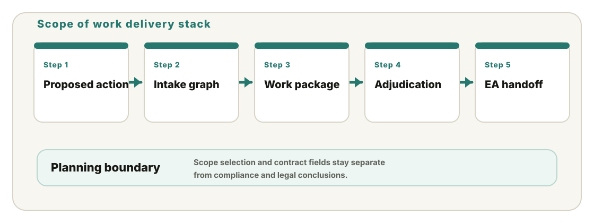
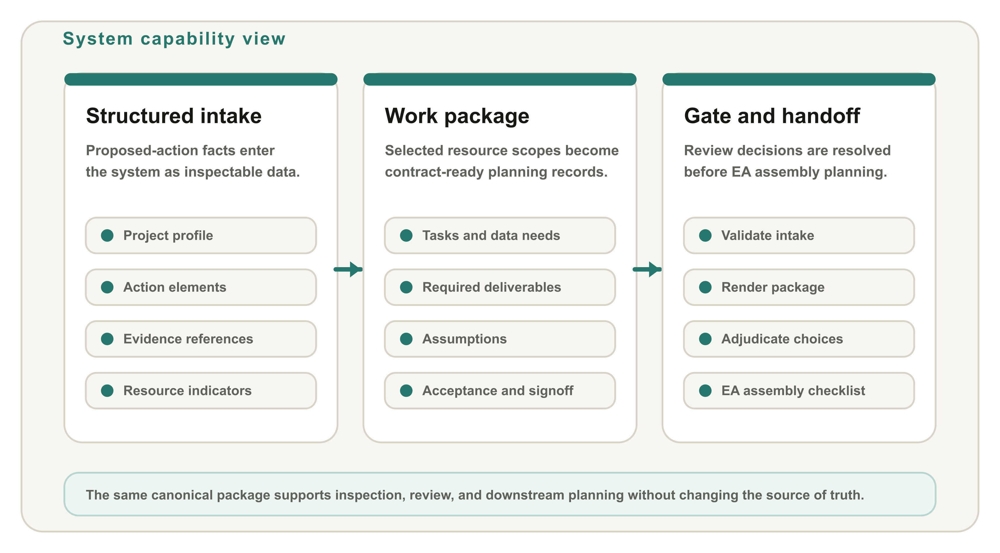

Standing Framework / Capabilities Brief
NEPA Scope of Work System
This system turns a structured proposed-action intake into a contract-ready scope of work package. It explains why resource workstreams are selected, renders the work needed from each resource area, and carries reviewer decisions forward without converting planning support into compliance conclusions.
Purpose
Scope of work development is a common project bottleneck. Agency staff may inflate resource-area requirements beyond what laws, regulations, and project facts require. This system identifies only the required work and excludes preference-driven additions.
Overall system facts
Structured intakeCaptures proposed action, project profile, resource indicators, evidence references, and review assumptions as data.
Traceable selectionShows why resource workstreams were selected and where reviewer confirmation is still needed.
Contract packageOutputs tasks, data needs, deliverables, acceptance criteria, roles, timing, and signoff fields.
Planning boundaryKeeps scope planning separate from compliance determinations, legal conclusions, and future EA artifacts.

What the model produces
Resource-specific work records that distinguish tasks, data needs, deliverables, assumptions, dependencies, acceptance criteria, reviewer roles, timing, and signoff.
What reviewers control
Unresolved selections, optional deliverables, and handoff readiness remain visible as adjudication items before the accepted package moves into EA assembly planning.
System Design / Core Capabilities
Traceable planning package before EA assembly
The design keeps three things explicit: the evidence path from proposed action to selected resource scope, the contract fields needed to order specialist work, and the reviewer gate that decides what is ready to hand off.

Evidence graphPreserves the chain from proposed action to action element, evidence reference, resource area, and selected resource scope.
Package rendererKeeps work tasks, deliverables, assumptions, dependencies, acceptance checks, timing, and signoff fields explicit.
Operational gateValidates the package path before handoff and routes unresolved choices through reviewer adjudication.